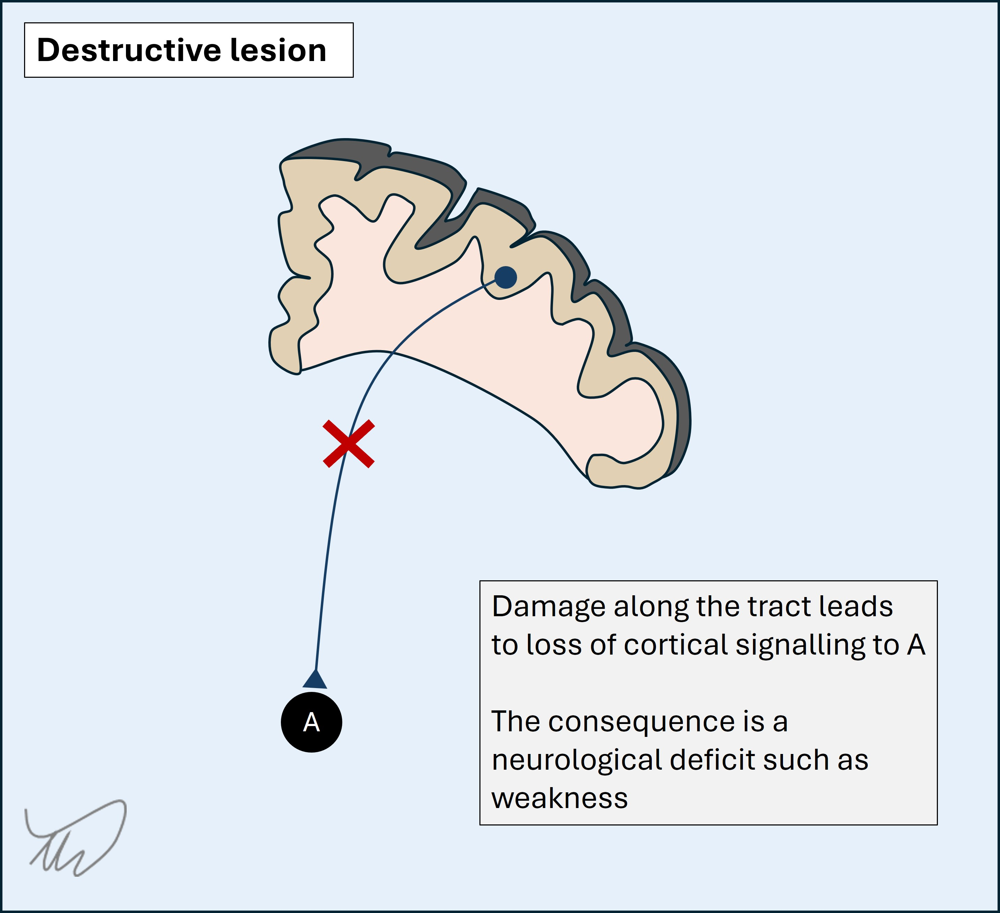
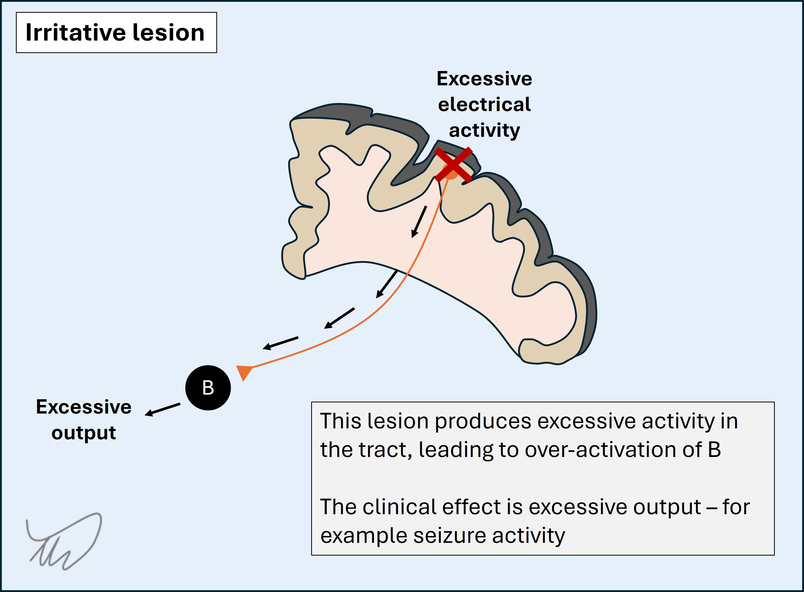
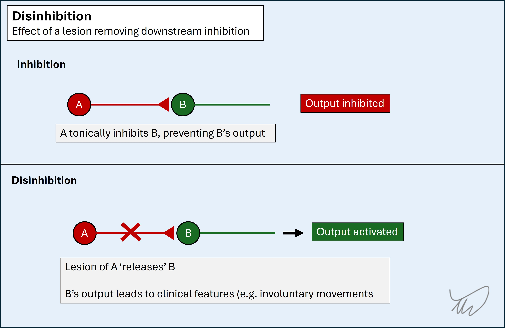
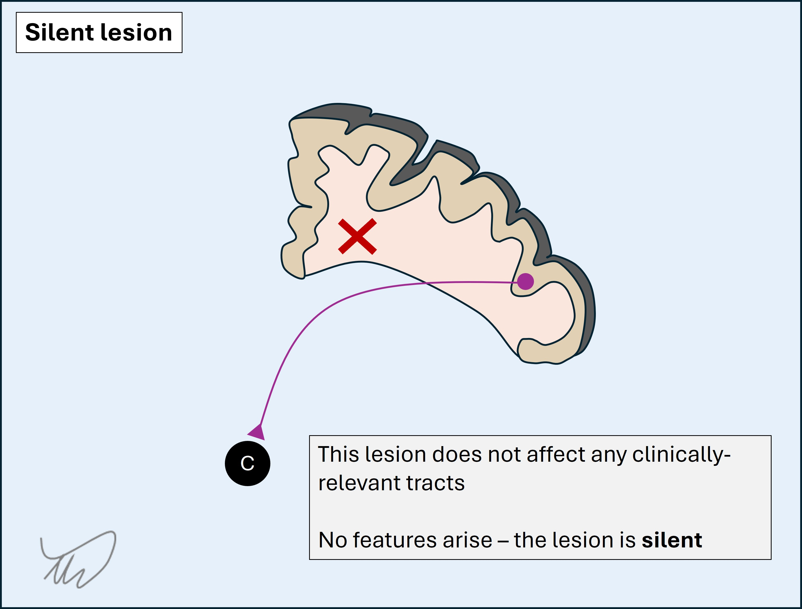
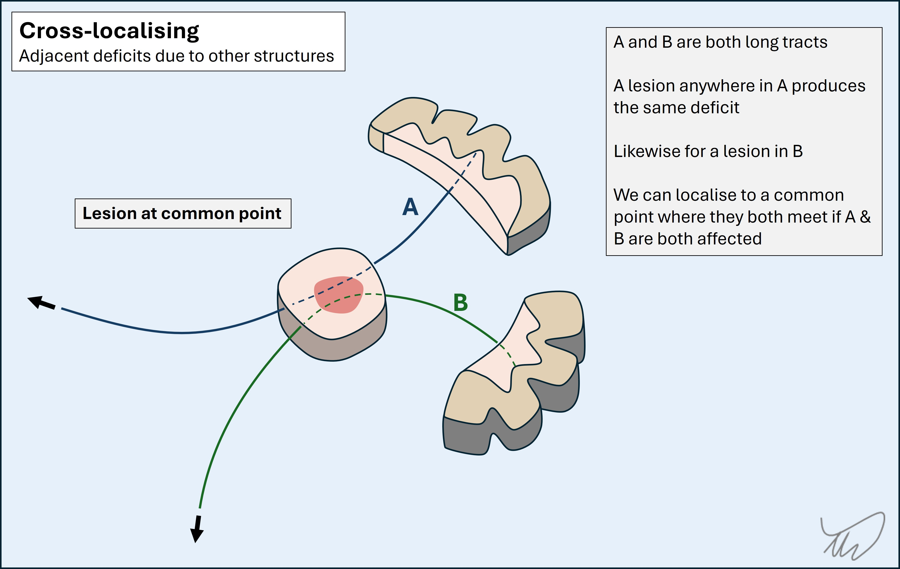

APPROACH: WHERE IS THE LESION, WHAT IS THE LESION?
Overview
Patients come to us with symptoms of unknown origin. It is our job to localise these symptoms within the nervous system and then establish what disease process is underlying. We can't treat until we do this.
Two central questions underlie the neurological assessment, and give us a framework for assessing problems:
The first is about anatomy. To answer it requires knowledge of the structure of the nervous system and how clinical features relate to this. Neuroanatomy is vast - yet a lot can be achieved using a few basic rules.
The second is about pathology. It relies mainly on the natural history of different disease processes, particularly onset and evolution. In general, this reflects underlying pathology reliably.
LesionsA lesion is anything that disrupts function in the nervous system. It's easiest to think of these as physical structures of some kind - a tumour, an area of infarction, a demyelinating plaque, a compressive aneurysm - although the definition can stretch to include chemical disruptions (metabolic or toxic lesions) in addition to other processe such as degeneration.
Lesions don't have to be permanent - there are many examples of transient lesions, including ischaemia or migraine aura, which don't leave lasting damage. Others can be physically persistent but only produce recurrent paroxysmal symptoms, particularly seizures.
Lesions can be focal and solitary, and for these, localisation is pure and economical - one lesion in one site must explain all the clinical features, unless they are red herrings - for example a legacy of previous insults, or benign variants of normal which are not pathological but just reflect that patient's constitutional 'wiring'.
Lesions also can be multifocal - and many are. This can be more challenging to assess, as the first question of 'where' cannot be easily answered. The clue is when clinical features cannot be traced to one possible site - for example a picture suggestive of bilateral lesions, or a process affecting both the cortex and the cerebellum. A skilled clinician can tell when a patient’s clinical features map to more than one site, and what those sites are. Examples include:
Finally, some patients have diseases which affect a diffuse area, so have many lesions, but affecting an element of the nervous system - for example the neuromuscular junction, meninges, or peripheral nerves. Again, combining the distribution and the clinical features present allows us to identify such a process, whether neuropathic, myopathic, meningeal or other - and answer the question - 'Where?'. We then ask 'What?' in exactly the same way we do for solitary and multifocal lesions to consider the type of disease responsible.
Effects of lesionsThere are many types of lesion, but there are only four ways they can manifest. This is fundamental to how we assess patients' clinical features.
A destructive lesion disrupts underlying structures - cortical tissue, tracts, nuclei, nerves (etc) - leading to deficits.
A deficit is very simply the absence of a normal function. We tend to refer to the consequences as negative symptoms - for example numbness, weakness or ataxia. However, some destructive processes disrupt normal function leading to positive symptoms - abnormal experiences - due to imbalance in the system, for example vertigo from a vestibular lesion.

2. Irritative lesionsAn irritative lesion causes excessive, abnormal activity in the underlying structure.
The best example is a seizure - with abnormal electrical firing of cortical cells leading to novel activity such as a jerking limb or a sensory hallucination such as an abnormal smell. Another example is when irritation of nerve roots, for example by a compressive disc, leads to shocks of pain shooting down the limb.
In general, irritation produces positive symptoms, though not always - some seizures simply lead to mutism or even coma. Further, some lesions produce both destructive and irritative effects - for example an infarction leading to hemiplegia, with additional seizure activity in the affected brain leading to involuntary jerking of the paralysed limbs.

3. Disinhibitory lesionsA disinhibitory lesion is a special type of destructive lesion. If A inhibits B, preventing B from its normal function - for example movement - then a lesion in A effectively takes the brakes off B, and B is able to act uninhibited. The consequences are seen as excess action in B, rather than a deficiency of A - but this is because A's function is purely to keep B reined in. The only manifestation of A being 'switched off' is B being 'switched on' - we see the deficit as a release phenomenon downstream.

The best and most dramatic examples of this are in the basal ganglia, leading to movement disorders such as violent and chaotic limb jerking (ballism). However, an important example happens with upper motor neuron lesions - loss of descending inhibition leads to excess activity in muscles, leading to spastic tone and exaggerated reflexes - and this is something we should look for in almost every neurological examination.
4. Silent lesionsA silent lesion is a stealth predator, but lacking the final 'kill' moment - it does nothing at all. We find many of these when we investigate patients - and we must apply localisation skills to these, too - asking whether they have any relevance to the patient's clinical features or are simply incidental.

Silent lesions may be chronic or even lifelong benign abnormalities such as cysts. In some cases the nervous system tissue has simply developed around such a lesion, and while it may be physically large, it has no effect on the surrounding tissue.
Silent lesions may also be more dangerous pathology such as a lacunar infarct or demyelinating plaque - but their location is in an area where they don't produce clinical features, whereas the exact same lesion would have done if it had landed on an important structure, such as the tracts in the internal capsule (leading to paralysis and sensory loss). Note that such lesions may lack symptoms but still produce features evident on examination, for example brisk reflexes.
Finally, these lesions may be individually silent, but over time, more accumulate, and they add up - with potentially disastrous consequences such as dementia.
General principles for localisationThe different parts of the system - 'Where?' - are explored in depth in the next section. First, some general principles.
Some areas of the nervous system lead to features that are highly specific to that single location, although there are not many. For these, the feature is referred to as having high localising value - its presence is a very good clue to a lesion in that site, and we would not really expect to find it as a consequence of pathology anywhere else. Certain cortical functions - and hence, dysfunctions - are like this.
Others do not localise as easily. We can say there is a problem in the tract, but not easily at what point - a problem anywhere along its path will lead to the same consequences, which are usually deficits from a destructive lesion. In a multi-neuron system (for example the ascending sensory pathways, with three neurons), we cannot say which neuron is affected unless each has special characteristics, as is the case for the upper and lower motor neurons, with lesions of either causing distinct features. This means that we can't really tell much about where the lesion is from the destructive effects on this tract alone, whether it is a long tract in the brain or spine, or a cranial or peripheral nerve on its way to its target. We just know it's damaged somewhere on its path - damage anywhere along it will lead to the same deficits.
Sometimes in neurology this is simply the case and we can only guess where the lesion might be - and look specifically at certain hot spots where lesions repeatedly happen, such as the elbow for the ulnar nerve, or a posterior communicating artery aneurysm next to the oculomotor nerve.
However, two 'tricks' allow us to be more precise:
If we can't tell where the lesion is somewhere along a pathway, we can look at what else is involved. If one or more other features is present we can map these to their underlying structures, too - then find a common site where a lesion would affect these additional structures, acting as a 'precision strike'.

We do this all the time. Adjacent structures are generally either adjacent cortical sites, other long tracts, or other nuclei. Examples include tracing a cranial nerve palsy to part of the brainstem due to co-involvement of the descending corticospinal tract, or identifying a middle cerebral artery stroke from hemiplegia combined with aphasia (expressive and receptive language centres) and hemianopia (visual pathways).
So if we can't tell where a lesion is somewhere along a pathway - we look at what else is involved. If we find something, the next question is - 'where do these structures travel near each other?'. If such a site exists, that's most likely the lesion site. If it doesn't - we may be dealing with a multifocal process.
2. Branch mappingSome tracts and nerves simply go straight for their target and give off nothing along the way - for example the abducens nerve, whose sole function is to contract the lateral rectus muscle on one side.
Others give off branches on their path which each travel to or from their own targets - for example the trigeminal nerve, with three distal sensory parts which converge at the trigeminal ganglion and travel as a single nerve towards the brainstem. Many of the peripheral nerves also do this, and it is also true of the corticospinal and sensory tracts in the spine, which exit or enter at individual levels and innervate certain muscles or areas of skin (myotomes and dermatomes).
If a long tract has branches, we can find the lesion along a proximal to distal line according to which branches are involved and which are not. As a rule, a lesion will affect all distal branches below it - it will not spare these. The more proximal ('higher') the lesion, the more extensive the effects.

As an example, a high radial nerve lesion in the axilla paralyses distal muscles (wrist and finger extensors) as well as proximal ones (triceps) and produces extensive sensory deficits in the posterior arm. A radial nerve lesion at the elbow spares the proximal branches, with weak wrist and finger extensors but intact elbow extensors and less extensive sensory loss - confined only to part of the dorsal hand.
These two techniques are used extensively in the cases explored in this resource.
The neurological assessmentDone properly, the neurological assessment allows us to reliably predict the likely cause of a patient’s symptoms. Most of this is achieved from the history, with the exam serving to fine tune the clinical impression. Investigations are then organised with specific hypotheses in mind.
It is a misconception that the assessment is excessively long, particularly the examination. In reality it should be a focused act - testing relevant parts of the nervous system with sound and efficient techinque.
During the assessment we should always be thinking 'where?' and 'what?' - and when we finish, we should commit to a focused clinical formulation, summarising our thoughts and guiding our investigations.
Skipping the process of formulation - where and what? - leads to problems, not least inefficiency and waste. Investigation frequently finds incidental, irrelevant pathology. Localisation skills are essential to combat this - we localise before we test, and we do it after to ask whether the findings are relevant or not.
To do this well, we need the following:
The next sections address all four. We begin with "Where?".
Where?